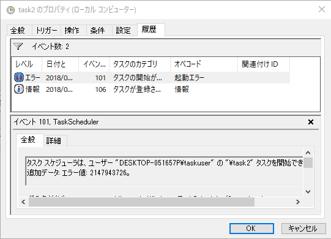
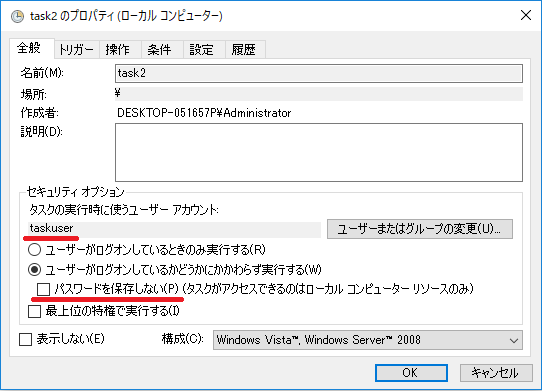
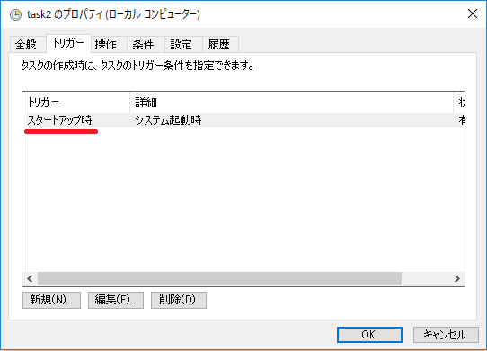

本記事は、2018 年 9 月に公開された スタートアップ時タスクの実行に失敗する問題について を、アーカイブされたサイトから移管した記事となります。
こんにちは、Windows サポートチームの中森です。
今回は、タスク スケジューラにて “スタートアップ時” (システム起動時) のトリガーを登録しているタスクの実行が失敗する問題について、ご紹介いたします。
現象
タスク スケジューラにて、”スタートアップ時” (システム起動時) のトリガーを登録しているタスクが複数登録されている場合、それらのタスクがランダムに実行失敗する場合があります。
事象発生時には、該当のタスクが実行されず、タスク スケジューラの履歴タブにエラー イベント ID: 101 が記録されます。またその際のエラー値は ERROR_LOGON_FAILURE (2147943726) となります。(タスク スケジューラの履歴機能を有効化している場合のみ。)

発生条件
この問題は以下の 3 つの条件を全て満たす場合に発生する可能性があります。
① OS バージョンが以下のいずれかに該当する。
- Windows Server 2016
- Windows Server 2012 R2
- Windows 10 (Version 1803 までの全てのバージョン)
- Windows 8.1
※上記のバージョン以降でも発生する可能性がございます
② 2017 年 9 月 以降の更新プログラムを適用している。
本問題は、Windows 10 Version 1703 以降の OS バージョンでは更新プログラムを適用しない状態でも発生いたします。
対して、Windows 10 Version 1607 までの OS バージョンおよび、サーバー OS では 2017 年 9 月以降の更新プログラムを適用した場合に発生することが確認されています。
具体的には、以下の更新プログラムを適用した場合には、本問題が発生することが確認されています。また該当のモジュールが含まれる更新プログラム、例えば、より新しいロールアップ更新プログラムを適用した場合にも同様の問題が発生します。(セキュリティ更新プログラムを適用した場合には該当のモジュールが含まれず、発生しない場合があります。)
Windows 8.1 / Windows Server 2012 R2
2017 年 9 月 20 日 - KB4038774 (マンスリー ロールアップのプレビュー)
https://support.microsoft.com/ja-jp/help/4038774/
Windows 10 RTM
2017 年 9 月 13 日 - KB4038781 (OS ビルド 10240.17609)
https://support.microsoft.com/ja-jp/help/4038781/
Windows 10 Version 1607 / Windows Server 2016
2017 年 9 月 29 日 - KB4038801 (OS ビルド 14393.1737)
https://support.microsoft.com/ja-jp/help/4038801/
③ 以下の 3 つの条件を全て満たすタスクが複数 (2 つ以上) 登録されている。
この問題は、タスクの実行にあたりタスク スケジューラから資格情報マネージャーに資格情報の要求を行った際、資格情報マネージャーにおいて、複数スレッドでの処理を正しく完了できなかった場合に発生します。そのため、複数のタスクで以下の設定が行われている場合にのみ発生します。
実行ユーザーが、SYSTEM アカウント等の特殊なアカウントではない。
“パスワードを保存しない” オプションが設定されていない。

- トリガーに “スタートアップ時” (システム起動時) が設定されている。

対処策
以下のいずれかの対処を行うことで、本問題を回避することが可能です。
a) SYSTEM アカウントを使用する
タスクの実行ユーザー アカウントとして “SYSTEM” 特殊アカウントを指定することで、お問い合わせの問題を回避することが可能です。SYSTEM アカウント (Local System アカウント) は、Windows OS により内部的に使用される特殊なサービス アカウントです。セキュリティ識別子としては S-1-5-18 が割り当てられており、ローカル コンピューターにおいては管理者 (Administrators グループ) と同等、或いはそれ以上の権限を持ちます。
SYSTEM アカウントは以下手順にて、タスク スケジューラの実行ユーザーに指定することが可能です。その場合、タスク スケジューラからのタスクの実行に際して資格情報マネージャー等は使用せず、そのため、お問い合わせの問題を回避することが可能です。
なお、ログオン ユーザーのプロファイルを使用するなど一部の処理は SYSTEM アカウントを使用できない場合がありますのでご注意ください。
(設定例)
- 管理者ユーザーでログオンします。
- スタート メニューの管理ツールより [タスク スケジューラ] を開きます。
- 該当のタスクを右クリックし、”プロパティ” を開きます。
- [全般] タブのタスクの実行時に使うユーザー アカウント欄の、[ユーザーまたはグループの変更] ボタンを押します。
- 選択するオブジェクト名として “SYSTEM” を記入し [OK] にて設定します。実行時に使うユーザー アカウントは “NT AUTHORITY\SYSTEM” となります。
- [OK] にてタスクのプロパティを閉じ、タスクを保存します。
b) “パスワードを保存しない” を設定する (ドメイン ユーザーの場合のみ)
タスクの実行ユーザーとしてドメイン ユーザーを設定している場合、タスクの [全般] タブにて “パスワードを保存しない” を設定いただくことで、お問い合わせの問題を回避することが可能です。
これは “パスワードを保存しない” を設定した場合には、ローカル コンピューターの資格情報マネージャーへ資格情報を保存せず、タスクの実行時には他の方法 (Kerberos 認証プロトコルの S4U 拡張) を使用してトークン情報を取得するためです。
なお、この設定を行うことで、設定項目に記載のとおり、タスクとして実行したバッチ ファイル等からのネットワーク アクセスを行うことができない動作となりますので、ご注意ください。
(設定例)
- 管理者ユーザーでログオンします。
- スタート メニューの管理ツールより [タスク スケジューラ] を開きます。
- 該当のタスクを右クリックし、”プロパティ” を開きます。
- [全般] タブのセキュリティ オプションにて、タスクの実行時に使うユーザー アカウントがドメイン ユーザーであることを確認します。
- “パスワードを保存しない (タスクがアクセスできるのはローカル コンピューター リソースのみ)” にチェックを入れます。
- [OK] にてタスクのプロパティを閉じ、タスクを保存します。
c) 異なる “遅延時間” を設定し同時に実行しない
システム起動時のトリガーに遅延時間を設定することで、事象の発生頻度を大きく下げることが可能です。
例えばシステム起動時のトリガーを持つタスクが 2 つ存在する場合、一方のトリガーに、遅延時間 1 秒を指定することで、事象の発生タイミングがずれ、事象の発生頻度が大きく下がります。(タスクが 3 つ以上ある場合、タスクには異なる遅延時間を設定します。)
(設定例)
- 管理者ユーザーでログオンします。
- スタート メニューの管理ツールより [タスク スケジューラ] を開きます。
- 該当のタスクを右クリックし、”プロパティ” を開きます。
- [トリガー] タブを開きます。
- “スタートアップ時” のトリガーを選択し、[編集] にて開きます。
- 詳細設定の “遅延時間を指定する” にチェックを入れ、遅延時間を指定します。
※ プルダウン メニューでは 30 秒が最小ですが、秒数は手動で指定が可能です。確認の結果では 1 秒を指定した場合にも十分な効果が得られましたが、できる限り事象の発生を回避するため、許容可能な最大の秒数、分数を指定します。
※ 遅延時間は、”スタートアップ時” (システム起動時) の全てのタスクで異なる値となるよう、設定します。 - [OK] にてトリガーを設定します。
- [OK] にてタスクのプロパティを閉じ、タスクを保存します。
d) タスクを 1 つにまとめる
設定されている複数のタスクについて、実行する操作 以外の設定 (特にタスクの実行ユーザーの設定) が同じ場合には、タスクを 1 つにまとめ、1 つのタスクに複数の操作を設定することで、本問題を回避可能です。
弊社での対応
マイクロソフトでは、この問題をこの資料の発生条件に記載されているマイクロソフト製品の問題として認識しています。
しかしながら、現時点では修正予定等はありませんため、本問題を回避する必要がございます場合は、上記の対処実施をご検討いただけますと幸いです。
本投稿が少しでも皆様のお役に立ちましたら幸いです。
※本情報の内容（添付文書、リンク先などを含む）は、作成日時でのものであり、予告なく変更される場合があります。
更新履歴
2024.04.03 - 2018 年 9 月に公開された スタートアップ時タスクの実行に失敗する問題について を、アーカイブされたサイトから本サイトに移管
2024.04.03 - 現在の情報を一部追記